Красный кубик: JEPA против flow matching в стохастическом мире
Черновик раздела для поста. Досчитаны все 10 конфигураций.
Коротко
Игрушечный мир: красный кубик 6×6 на кадре 63×63, единственный предсказуемый объект, а фон либо чёрный, либо шум. Кубиком управляют четыре действия, к каждому ходу добавляется скрытый ветер. Три world model по 10 минут на одной A100: JEPA с objective LeWM на решётке latent tinywmcraft, LeWM как в статье, с class token и autoregressive predictor, и flow matching из tinywmcraft. Смотрим, кто ведёт кубик под шумом и ветром.
На чёрном фоне с ветром работают все три, и LeWM ведёт кубик лучше всех. На чёрном фоне без ветра LeWM с class token схлопывает кадр в две сотни дискретных прототипов, в которых далёкие позиции перемешаны; точная позиция остаётся только в направлениях latent с ничтожной дисперсией, и predictor её не проносит: probe читает позицию с настоящего кадра, а с предсказанного latent нет. Шум ломает JEPA-объектив по-разному. LeWM с class token на любом шуме выучивает только текстуру фона: predictive loss близок к нулю, а кубика в latent нет, probe читает его на уровне случайного угадывания. JEPA на решётке latent держит кубик на шуме без ветра и на шуме, общем для эпизода, но на сером шуме, который перерисовывается каждый кадр, с ветром уходит в другой минимум: predictive loss не падает, latent кодирует шум, кубик потерян, три seed из трёх. Flow matching ведёт кубик на всех шумах, кроме цветного шума на эпизод без ветра, где она развалилась в серую кашу. gFVD у flow matching почти всегда лучше, потому что она рисует свежий шум, а JEPA декодирует ровный фон с кубиком: здесь gFVD измеряет фон.
Среда
Кубик двигается на 3 пикселя за действие: влево, вверх, вправо, вниз. Ветер это целочисленное случайное блуждание от −2 до 2 по каждой оси, начинается с нуля и на каждом шаге с вероятностью 0.8 остаётся прежним. Красная рамка шириной в пиксель стоит в одном пикселе от края, касание рамки это смерть с наградой −1. Эпизод обрывается на 128 шаге. Фон: чёрный, серый шум или цветной шум; шум либо новый на каждом кадре, либо один на весь эпизод. Ветер включён или выключен, всего 10 конфигураций. На чёрный фон и цветной шум собрано по 100 тысяч переходов случайной политики, на серый шум по 500 тысяч.
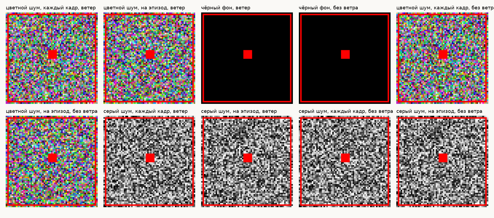
Модели
Общая архитектура взята из tinywmcraft. Encoder: тайлы 7×7, шесть transformer blocks на решётке 9×9, свёртка со stride 2 до решётки 4×4, latent 4×4×32, 2.6M параметров. Dynamics: transformer из шести блоков ширины 256, spatial attention по 16 токенам кадра и causal attention по кадрам, 8.3M параметров. У JEPA этот transformer выдаёт latent следующего кадра и обучается на MSE до него плюс SIGReg с весом 0.09, без stop-gradient и без EMA, ровно как в LeWM; history 8 кадров. Пиксельный decoder для JEPA обучается после бюджета на замороженных latent и нужен только для картинок и метрик. Flow matching это рецепт tinywmcraft как есть, 8 sampling steps.
LeWM повторяет статью, только encoder меньше под наш бюджет: ViT из шести блоков ширины 192, кадр читается через class token, latent 192 чисел, predictor из статьи: шесть AdaLN blocks с 16 головами, MLP 2048, history 3 кадра, dropout 0.1, тот же objective. Всего 15M параметров. На сером шуме на кадр без ветра прогнали и полный ViT из 12 блоков, 18M: результат тот же, что у шести.
Результаты
Все окна одни и те же для обеих моделей: 8 кадров context, 16 шагов прогноза, 512 окон для метрик по кубику и 2048 для gFVD и action following. Позицию кубика читаем у каждой модели там, где она у неё живёт. JEPA: probe по predicted latent, decoder ей не нужен и на странице он только для картинок. Probe per-tile: один MLP, общий для 16 токенов latent, даёт каждому тайлу logit и offset, позиция = softmax по тайлам × (центр тайла + offset); на latent настоящего кадра он ошибается на 0.25 px. У LeWM latent один вектор, probe тот же MLP по всему вектору; latent нормируем по размерностям или PCA-whitening, что лучше на отложенных кадрах. Пол probe около 20 px значит, что позиции в latent нет: угадывание центра кадра даёт столько же. Flow matching: CNN по декодированному кадру, decoder у неё часть модели. CNN: свёртки до сетки 8×8, logit и offset на ячейку, тот же softmax; обучен на 100 тысячах настоящих кадров, у которых фон вокруг кубика случайно оставлен, залит серым или серым с шумом; на настоящих кадрах ошибается на 0.3 px. Оба probe обучены на training кадрах, ошибка L1 в пикселях.
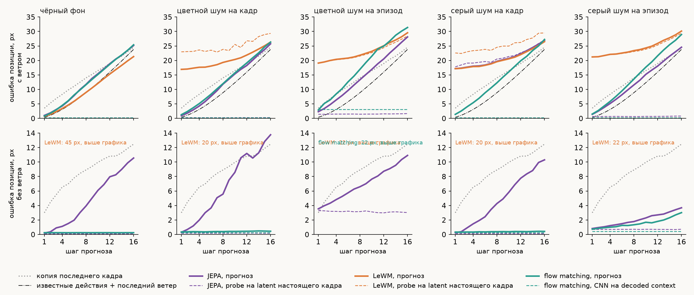
| конфигурация, JEPA / LeWM / flow matching | ошибка позиции на 8 шаге, px | пол probe, px | gFVD | AF |
|---|---|---|---|---|
| цветной шум на кадр, с ветром | 11.8 / 19.3 / 12.0 | 0.2 / 25.0 / 0.3 | 0.5749 / 0.7657 / 0.3576 | 0.80 / 0.49 / 0.76 |
| цветной шум на эпизод, с ветром | 13.3 / 21.8 / 16.9 | 1.5 / 22.6 / 3.1 | 0.3702 / 0.4217 / 0.4547 | 0.73 / 0.51 / 0.71 |
| чёрный фон, с ветром | 11.7 / 9.0 / 11.6 | 0.1 / 0.0 / 0.2 | 0.0009 / 0.0005 / 0.0005 | 0.82 / 0.85 / 0.80 |
| чёрный фон, без ветра | 3.9 / 45.3 / 0.2 | 0.1 / 0.0 / 0.2 | 0.0004 / 0.0208 / 0.0000 | 1.00 / 0.88 / 1.00 |
| цветной шум на кадр, без ветра | 5.6 / 19.4 / 0.4 | 0.2 / 24.0 / 0.3 | 0.5261 / 0.7686 / 0.3517 | 0.95 / 0.51 / 1.00 |
| цветной шум на эпизод, без ветра | 6.6 / 21.6 / 22.4 | 3.1 / 20.5 / 18.4 | 0.4182 / 0.5522 / 0.5248 | 0.89 / 0.51 / 0.68 |
| серый шум на кадр, с ветром | 19.7 / 19.6 / 12.3 | 21.3 / 25.2 / 0.2 | 1.2401 / 0.8962 / 0.1472 | 0.48 / 0.52 / 0.81 |
| серый шум на эпизод, с ветром | 11.6 / 23.4 / 13.6 | 0.7 / 24.0 / 0.2 | 0.3877 / 0.5247 / 0.3032 | 0.79 / 0.50 / 0.74 |
| серый шум на кадр, без ветра | 4.3 / 20.3 / 0.4 | 0.1 / 23.7 / 0.3 | 0.4747 / 0.8809 / 0.1571 | 0.94 / 0.51 / 1.00 |
| серый шум на эпизод, без ветра | 1.8 / 21.3 / 1.3 | 0.7 / 21.5 / 0.4 | 0.4307 / 0.5187 / 0.3556 | 1.00 / 0.49 / 1.00 |
Ветер ограничивает всех. Он блуждает со средней силой 0.8 пикселя на ось, ходы случайной политики взаимно гасятся, и после 8 шагов позицию определяет ветер: даже зная все действия и последний ветер, на 16 шаге ошибаешься на 24 пикселя. Информативны первые 8 шагов и расстояние до пунктира.
Чёрный фон с ветром: LeWM на 8 шаге ошибается на 9 px, JEPA и flow matching на 12, а нижняя граница по известным действиям и последнему ветру 9. Шум на кадр без ветра: flow matching держит кубик с ошибкой меньше пикселя на всём горизонте, JEPA на решётке уходит на 4–6 px к 8 шагу, LeWM кубика не видит. Шум на эпизод: JEPA и flow matching идут вровень, на сером с ветром JEPA чуть впереди, на цветном без ветра flow matching развалилась и JEPA одна ведёт кубик. Серый шум на кадр с ветром: у JEPA пол probe 21 px, latent кодирует шум вместо кубика; без ветра тот же рецепт сходится три seed из трёх, с ветром ни разу, batch 256 не помогает.
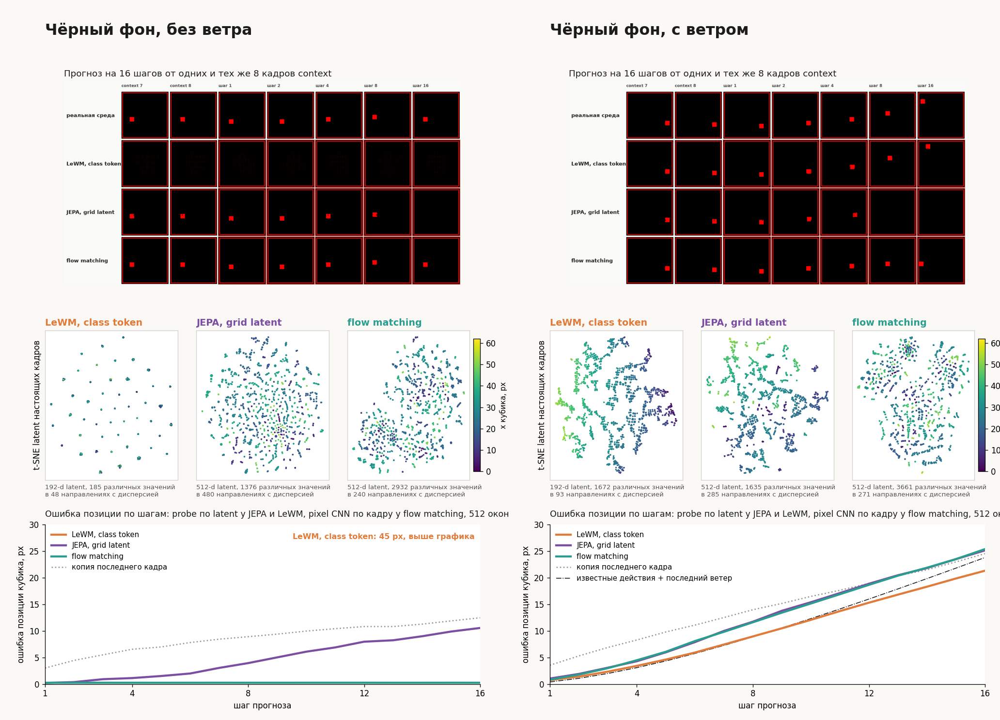
Сцены
Слева реальная среда, дальше JEPA и flow matching. Первые 8 кадров в колонках моделей прошли через encoder и decoder модели, красная рамка отмечает предсказанные кадры. На чёрном и сером фоне во второй гифке есть колонка LeWM.
цветной шум на кадр, с ветром
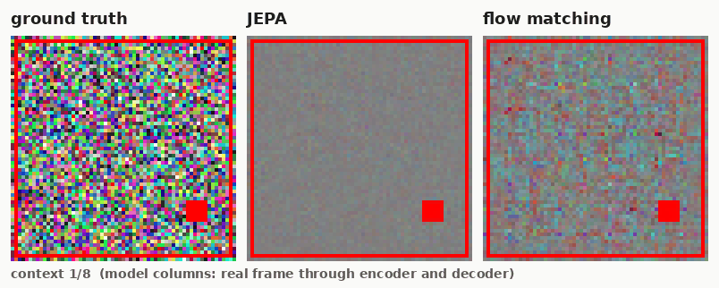
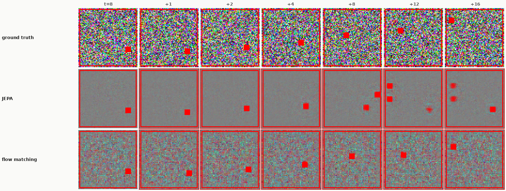
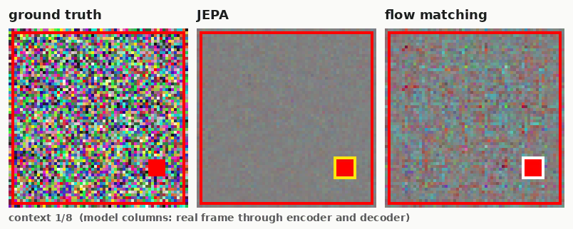
цветной шум на эпизод, с ветром
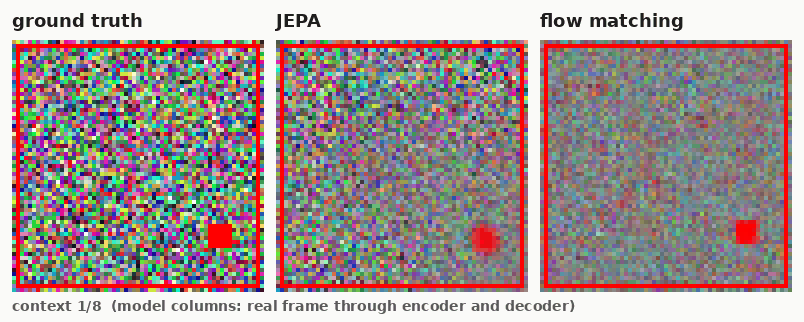
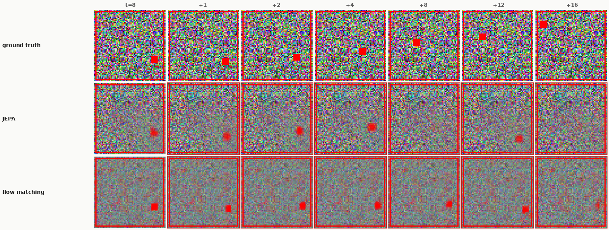
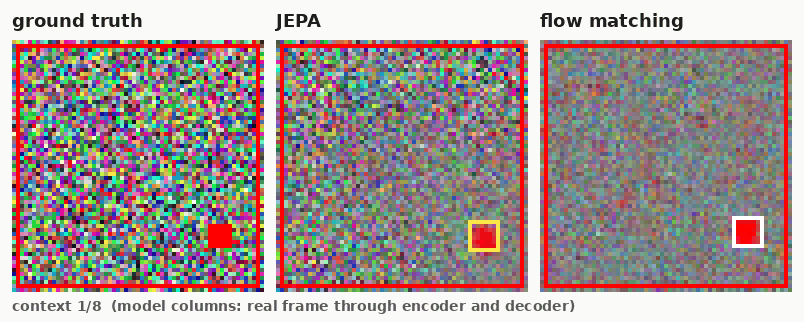
чёрный фон, с ветром
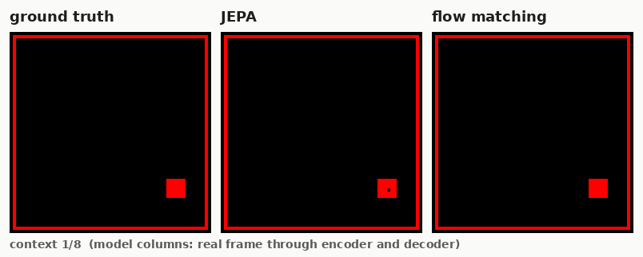
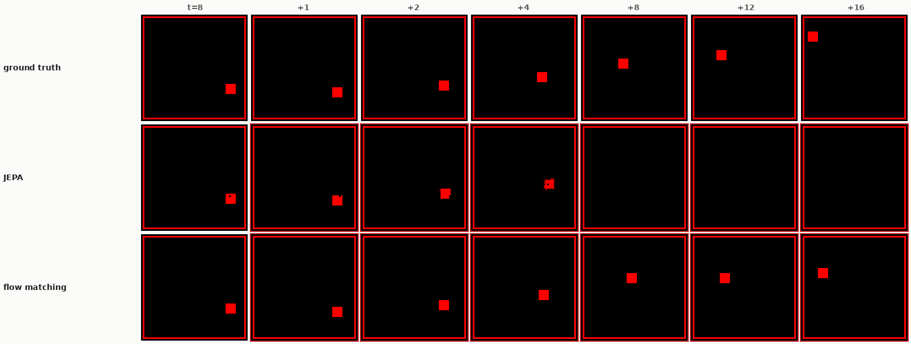
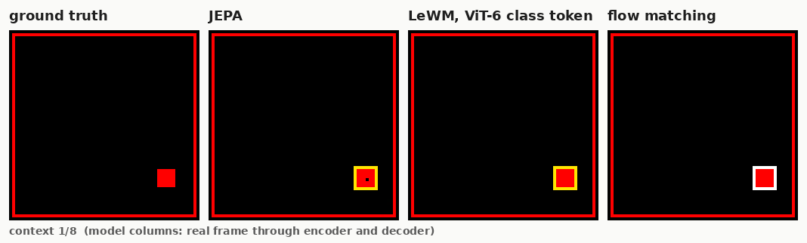
чёрный фон, без ветра

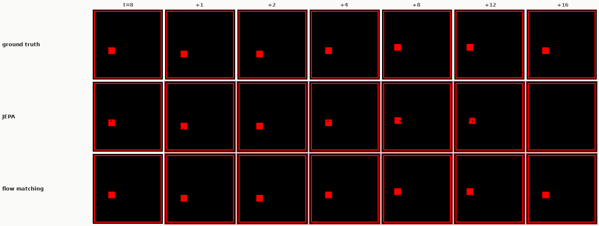
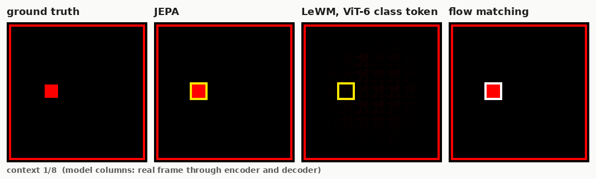
цветной шум на кадр, без ветра
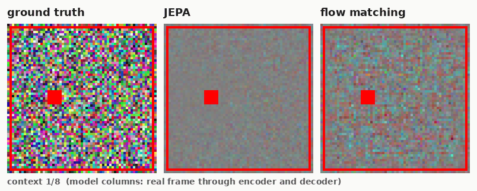
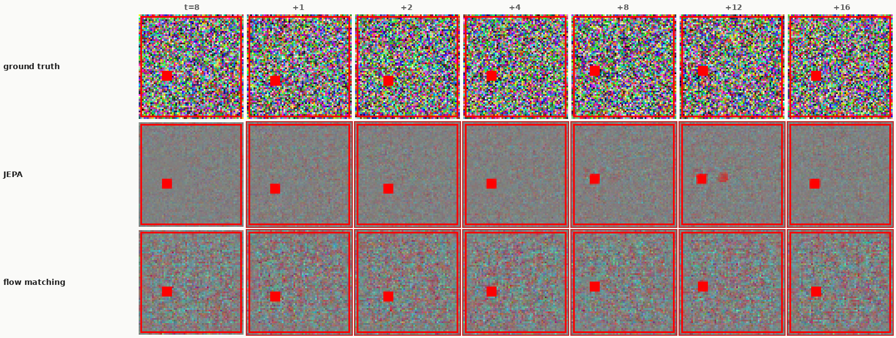
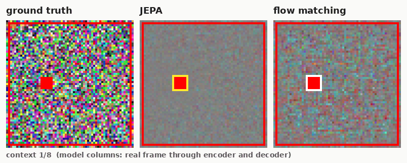
цветной шум на эпизод, без ветра

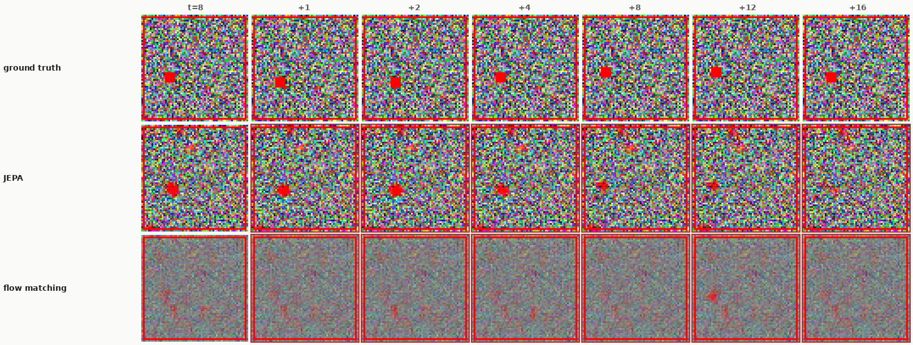
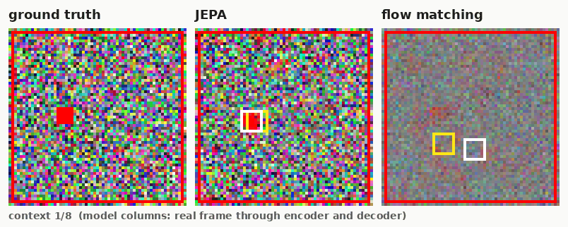
серый шум на кадр, с ветром

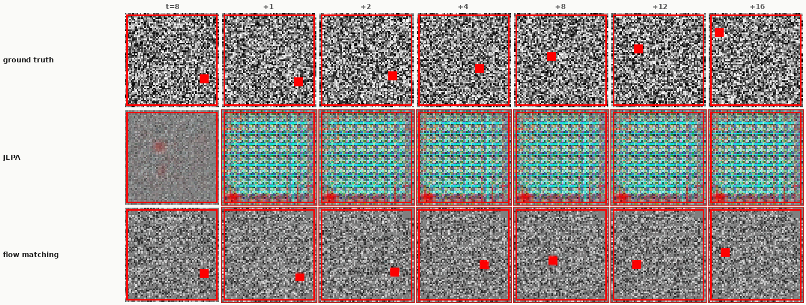
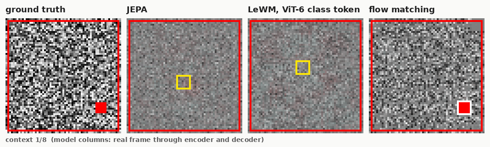
серый шум на эпизод, с ветром
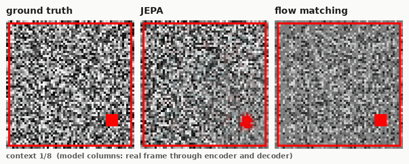
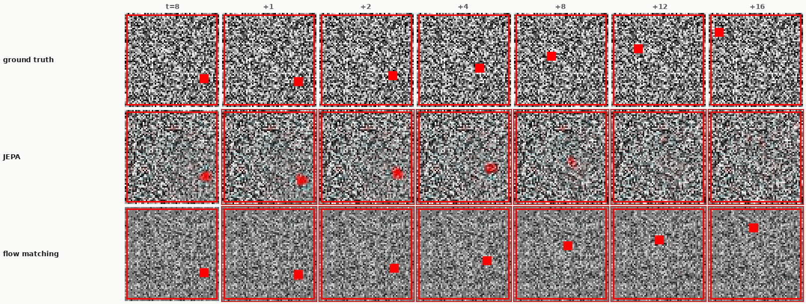
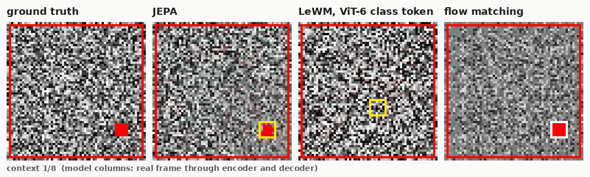
серый шум на кадр, без ветра
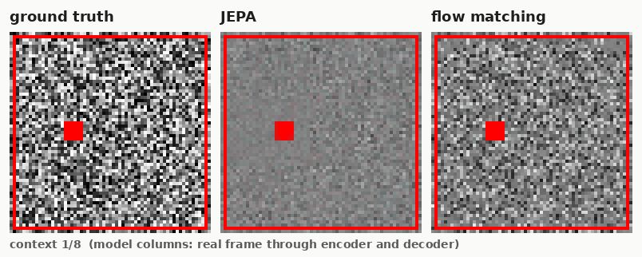
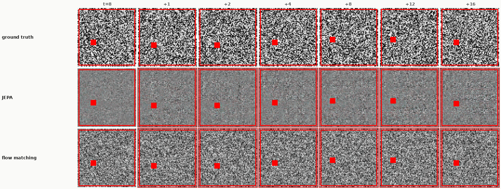
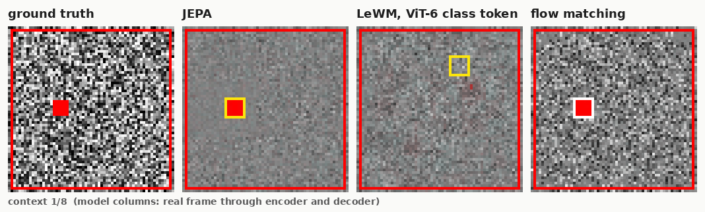
серый шум на эпизод, без ветра
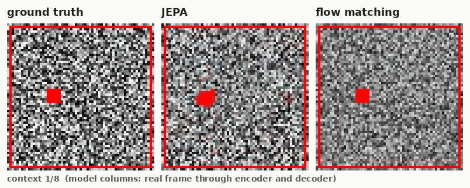
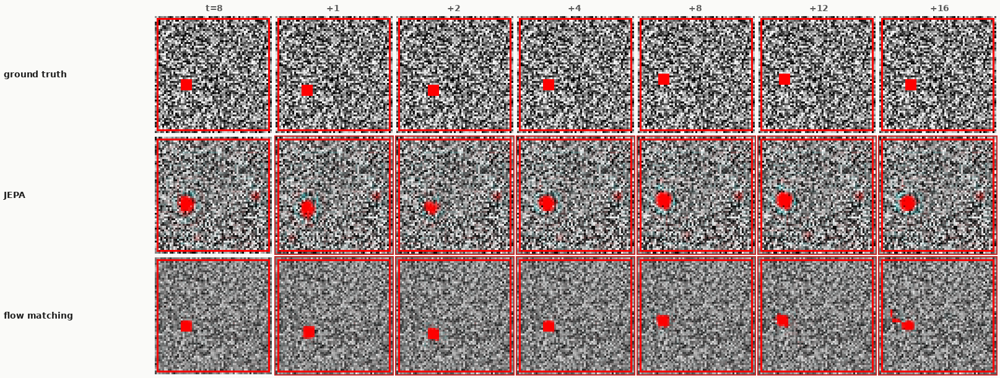
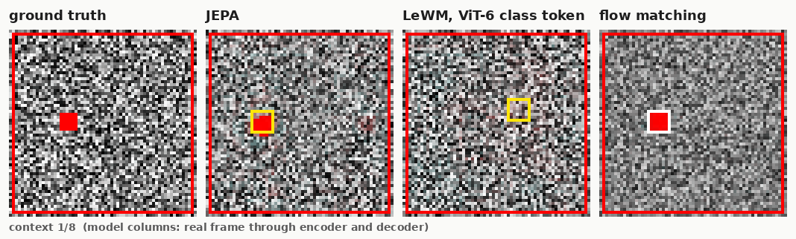
Поиграть самому
Реальная среда и обе модели рядом, в одном окне. Первые 7 кадров эпизода модели видят настоящими, дальше каждая живёт в своём воображении и отвечает на те же клавиши. Окно работает, пока запущен сервер на multigpu-vm и проброшен порт:
ssh multigpu-vm 'cd ~/personal/tinycraft-jepa && JAX_PLATFORMS=cpu setsid nohup \
~/personal/tinywmcraft-slim/.venv/bin/python -m studies.redcube.serve --root /dev/shm/redcube \
--flow-code ~/personal/codex-wm-push-20260916/recipes/model-51ffe8df --port 8765 > runs/redcube/serve.log 2>&1 &'
ssh -f -N -L 8765:localhost:8765 multigpu-vmСтрелки или WASD = ход, R = новый эпизод, выпадающий список = конфигурация. Если рамка пустая, сервер не запущен. То же в отдельной вкладке: localhost:8765.